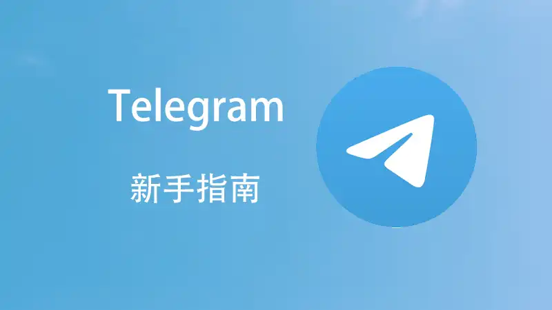

Telegram如何收藏信息？
在Telegram中，你可以通过将信息发送到“已保存消息”来收藏内容。只需在聊天中长按你想收藏的消息，然后选择“转发”，接着选择“已保存消息”。这样，你可以随时在“已保存消息”中查看和管理所有收藏的内容，包括文本、照片、文件等。
如何将信息保存到Telegram“已保存消息”
保存单条消息的操作方法
- 长按消息进行保存：在Telegram的聊天窗口中，长按你想保存的消息，弹出操作菜单后，选择“转发”选项。在转发页面中，选择“已保存消息”作为接收对象。
- 使用分享功能保存：点击消息旁的分享按钮，选择“转发”后，将消息转发到“已保存消息”中。这样，该消息会存储在你的个人收藏区，方便随时查阅。
- 通过右键菜单保存：在桌面版Telegram中，右键点击你想保存的消息，选择“转发”并选择“已保存消息”。消息会自动保存到个人消息中。
批量保存消息的技巧
- 选择多条消息一起保存：在手机或桌面版Telegram中，可以长按第一条消息并拖动选择更多消息，然后选择“转发”按钮，将选中的消息批量保存到“已保存消息”中。
- 使用“已保存消息”作为收件箱：你可以将整个对话窗口的内容转发到“已保存消息”，以便后续查看。这对于整理多个对话或重要信息特别有用。
- 保存文件和媒体文件：除了文本消息，你还可以批量保存图片、视频和文件。在选择消息时，长按包含文件的消息，点击“转发”并选择“已保存消息”，所有媒体文件也会被保存。
Telegram收藏信息的多种方式
收藏文本、照片与文件
- 保存文本消息：在聊天中长按需要收藏的文本消息，选择“转发”，然后选择“已保存消息”。文本信息将保存到个人消息中，方便随时查看。
- 收藏照片和视频：除了文本消息，Telegram也支持将图片、视频等媒体文件保存到“已保存消息”中。长按媒体文件，选择“转发”并保存至个人收藏。
- 保存文件和链接：对于发送的文件或网页链接，同样可以通过“转发”功能保存到“已保存消息”。这样，你可以将文件和链接整理成一个方便查找的存储库。
使用标签管理收藏内容
- 创建标签分类收藏：Telegram允许你为“已保存消息”中的内容添加标签，帮助你对不同类型的信息进行分类管理。你可以通过编辑标签来对文本、图片、文件等进行分类整理。
- 按标签搜索收藏内容：通过标签功能，你可以快速搜索特定类别的收藏内容。例如，如果你为某些重要消息添加了“工作”、“学习”等标签，之后只需搜索标签即可找到相关信息。
- 管理标签的有效性：定期检查并更新标签可以帮助你更好地管理“已保存消息”。你可以删除不需要的标签，或为新保存的信息添加标签，从而使内容整理更加有序。
使用Telegram“已保存消息”管理收藏
查看和整理已保存的消息
- 访问“已保存消息”：打开Telegram应用，在主界面点击左上角的菜单按钮，选择“已保存消息”选项。所有保存的消息、文件和媒体都会在这里显示，方便你随时访问。
- 整理消息内容：你可以定期整理已保存的消息，删除不再需要的内容。长按消息或文件，选择删除选项，将不需要的信息清理出收藏夹，保持整理有序。
- 分组管理保存内容：虽然“已保存消息”中没有独立的文件夹功能，但你可以通过为不同类型的内容添加标签来进行分组。例如，为工作相关的文件添加“工作”标签，方便后续查看。
在已保存消息中搜索信息
- 使用搜索功能：在“已保存消息”界面顶部，你可以看到一个搜索框，输入关键词后，Telegram会自动筛选出包含该关键词的消息和文件。这样可以快速找到特定的内容。
- 搜索特定类型的文件：如果你保存了很多照片、视频或文档，可以在搜索框中直接输入“图片”、“视频”或文件类型的名称，快速定位到相应的文件或媒体内容。
- 按时间排序查找：在“已保存消息”中，所有消息按时间顺序排列。如果你记得保存内容的大致时间，可以通过滚动界面或搜索时间相关的关键词来快速查找。

如何通过搜索功能快速找到收藏的信息
搜索“已保存消息”中的内容
- 使用关键词搜索：在“已保存消息”页面顶部的搜索框中输入关键词，Telegram会自动筛选出包含该关键词的所有消息。无论是文字、链接还是其他类型的内容，都会被包含在搜索结果中，帮助你快速定位。
- 搜索时间段内的消息：如果你记得收藏的信息大致保存的时间，可以在搜索框中输入相关的日期或时间段，这样可以更精确地找到你保存的消息。
- 查找特定对话中的内容：如果你将某个特定对话的内容转发到“已保存消息”中，可以通过搜索该对话的名称或者对话中的关键词，快速找到相关的消息和信息。
搜索特定文件和媒体
- 按文件类型搜索：如果你在“已保存消息”中保存了大量的图片、音频或视频，可以通过输入文件类型的名称（如“图片”、“视频”）来筛选出特定类型的文件。Telegram会自动显示所有符合条件的文件，帮助你快速查找。
- 搜索文件名或文件内容：如果你记得文件的名称或部分内容，可以在搜索框中输入相关的文字或文件名，系统会精准地找到保存的文件或媒体。例如，输入文件的名称或文件的一部分，可以直接跳转到对应的文件。
- 筛选媒体文件：在“已保存消息”中，你还可以点击搜索框旁的“媒体”按钮，专门筛选出图片、视频和其他文件。这样，你就可以快速查看保存的所有媒体文件，而不需要手动翻阅每一条消息。

Telegram收藏信息的安全性
如何确保收藏的内容安全
- 启用两步验证：为提高Telegram账户的安全性，建议开启两步验证功能。通过短信或认证应用来增加登录的安全性，即便账户密码泄露，黑客也无法轻易访问你的“已保存消息”内容。
- 定期检查设备：检查与Telegram账户绑定的所有设备，确保没有未经授权的设备登录你的账户。在“设置”中的“设备”选项中查看并管理已登录设备，及时注销不认识的设备。
- 更新Telegram应用版本：保持Telegram客户端的最新版本，以确保你的账户始终使用最新的安全协议和修复了已知的漏洞。定期更新可以降低被攻击的风险。
保证“已保存消息”的隐私性
- 使用密码锁定Telegram：在手机设置中启用Telegram的内置密码保护功能，设置一个独立的PIN码或指纹锁。这样，除了你自己，其他人无法访问你的Telegram账户和已保存的内容。
- 限制消息的转发权限：对于敏感信息，可以在保存时设置转发限制。这样，任何其他用户都无法将你的已保存消息转发到其他人，增加隐私保护层。
- 避免在公共设备上使用Telegram：尽量避免在公共或不信任的设备上登录Telegram账户。如果需要使用公共设备，记得退出账户并清除浏览器缓存，防止敏感信息泄露。
Telegram可以直接用邮箱收藏信息吗？
Telegram不支持通过邮箱直接收藏信息。用户可以通过将信息转发到“已保存消息”来进行收藏。通过这种方式，文本、图片、文件等都可以保存并随时查看。
如何批量保存多个消息到Telegram？
在Telegram中，可以通过长按消息并选择多个进行转发，将多条消息一起保存到“已保存消息”。这种方法适用于文本、图片、视频等多种消息类型。
如何管理Telegram中保存的内容？
保存的内容可以通过“已保存消息”进行管理。用户可以查看、删除或搜索已保存的消息，也可以通过标签来对信息进行分类，方便后续查找。
其他新闻

Telegram的贴纸怎么保存？
在Telegram中保存贴纸非常简单。首先，点击聊天中的贴纸，进入查看模式。然后，点击右下角的“保存”按钮（通 […]
2024 年 09 月 13 日
Telegram哪些国家有限制？
Telegram在一些国家受到限制或封锁，包括中国、伊朗、俄罗斯和部分中东国家。这些国家可能会完全封锁Tele […]
2024 年 10 月 22 日

Telegram可以发多大的文件？
Telegram允许发送最大2GB的文件。这适用于所有类型的文件，包括视频、音频、文档等。通过云端存储，用户可 […]
2024 年 12 月 06 日

Telegram的图片路径在哪里？
Telegram图片默认保存在设备的存储中。对于Android设备，通常在“Telegram/Telegram […]
2024 年 11 月 02 日